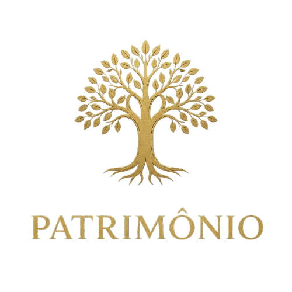
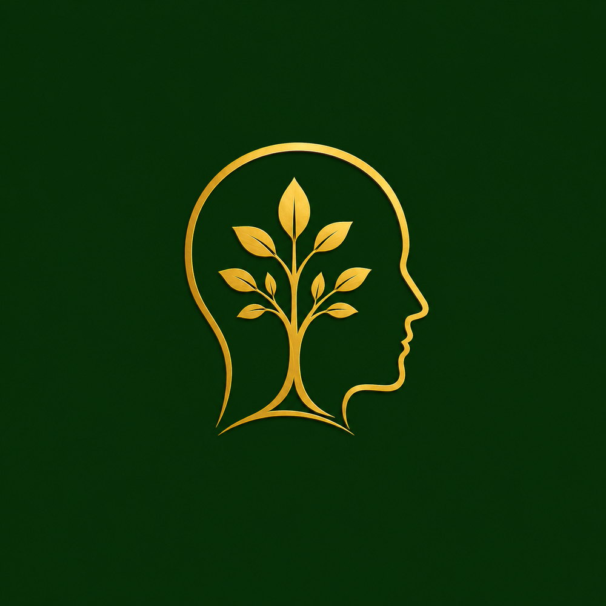
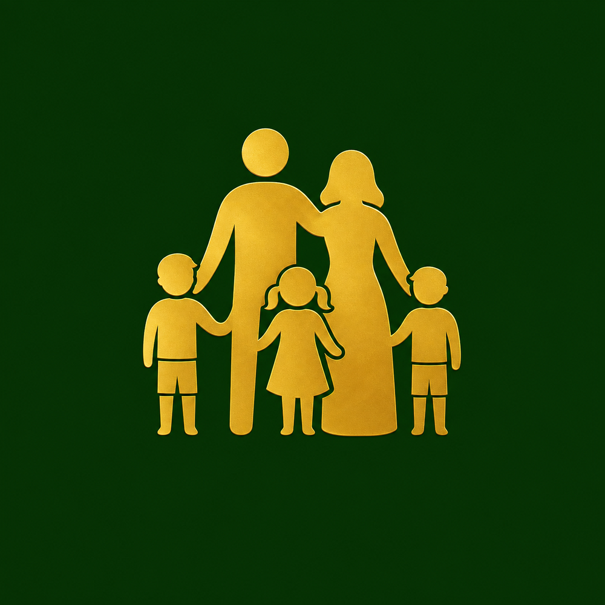
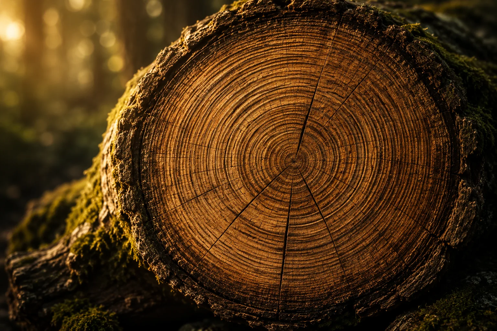
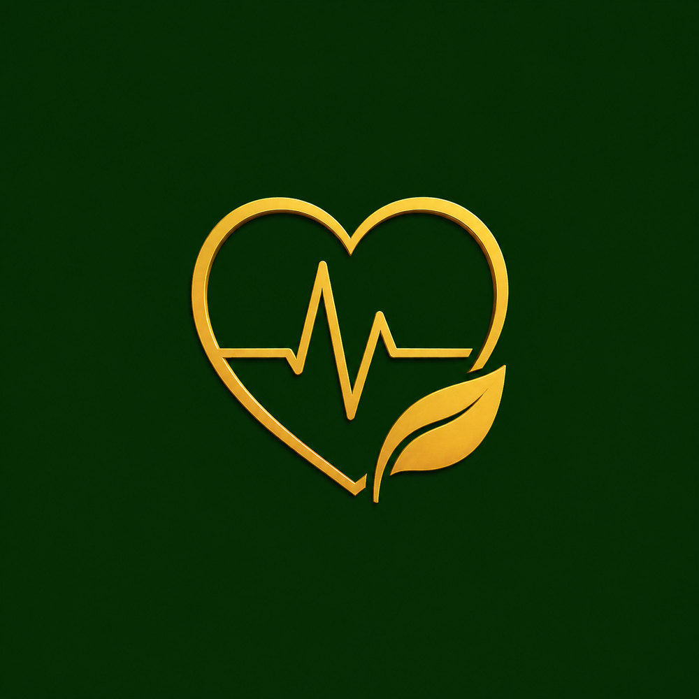

Patrimônio
Construir recursos para servir à vida, e não viver para servir ao dinheiro.
Movimento Vida Robusta
Vivemos em uma época que valoriza velocidade, aparência e resultados imediatos. A Vida Robusta nasceu para lembrar que tudo o que permanece começa pelas raízes.
Raízes fortes. Frutos duradouros.
Por que existimos
O mundo já tem plataformas suficientes para mostrar folhas. A Vida Robusta nasceu para fortalecer raízes.
Uma árvore centenária não cresce depressa. Uma família forte não se constrói em um fim de semana. Um patrimônio sólido não nasce de decisões impulsivas. Uma vida com propósito também não.
A Vida Robusta nasceu para ser um lugar onde voltamos a conversar sobre aquilo que realmente sustenta uma vida bem vivida. Sem promessas fáceis, fórmulas mágicas ou atalhos.
Patrimônio, mentalidade, família, saúde e fé não competem entre si. São dimensões que se fortalecem mutuamente e nos ajudam a construir uma vida que permaneça firme quando as circunstâncias mudam.
Os cinco pilares
Os pilares organizam nossa reflexão, mas não limitam a conversa. Na vida real, todos eles se encontram.





Uma árvore não cresce olhando para os frutos. Ela cresce fortalecendo as raízes.
Uma reflexão sobre raízes, problemas, estações e aquilo que permanece quando ninguém está olhando.
Ler a conversaFerramentas
As ferramentas da Vida Robusta serão simples, práticas e orientadas à vida real. Começamos pelas finanças e avançaremos aos poucos.
Perguntas objetivas, em poucos minutos, para um retrato direto da sua saúde financeira hoje.
Cruze seus últimos três meses com seus objetivos e identifique onde ajustar.
Acompanhe seus gastos sem precisar montar ou manter uma planilha complicada.